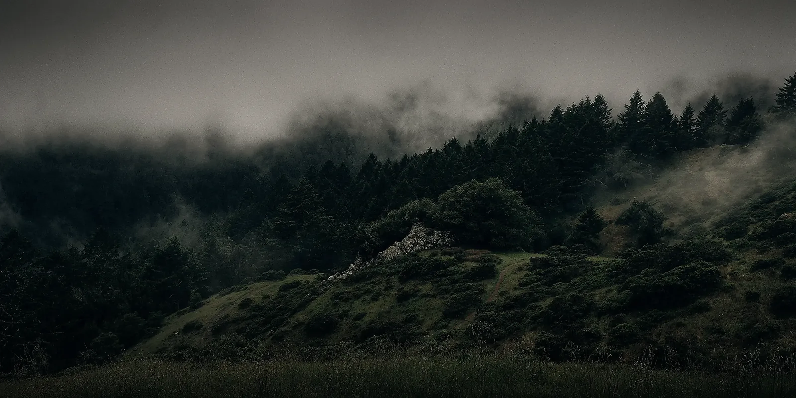
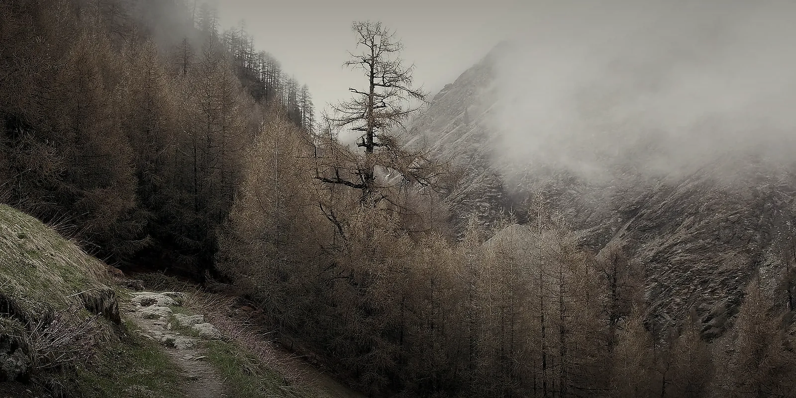

卡塔瑞亚学院
神罚后世人们的第二位先驱者
学院
卡塔瑞亚学院是普罗米修大陆世人的第二位先驱者
卡塔瑞亚学院位于诺尔安诺山脉北方的米拉蕾卡森林中，建立于第一纪元，在神罚之后，世界初步恢复秩序，人们发现神罚所带来了无数种未知力量，在人们对这种未知的力量进行更深入的研究后发现这种力量来自于被神罚落下而带来的法则碎片，这些法则碎片虽然不是完整的法则却依旧散发着力量正常运作影响这个世界，世人在足够熟悉法则碎片的情况下可以在法则碎片的规则内利用法则所带来的力量，在第一纪元初期到中期人们所认知到的法则仅仅只有青石魔法法则，即使加上所发现的未知能力法则也只有三种，卡佩托缇娜王室为了能在已知的青石魔法领域和法则领域能更深一步的探索而提出建立卡塔瑞亚，由于神罚后世界混乱不堪，当代女皇缇娜·卡佩托大多精力都放在周边秩序的安定和难民的救助，没有过多精力和资源去建立卡塔瑞亚，直到开始有民间自发组织的魔法组织加入才得以建成，缇娜女皇本打算取名为卡佩托学院，为了纪念这些民间魔法师的贡献将学院的命名权交予对方，同时将学院一半的权利交予这些来自民间的魔法师们，至此学院正式命名为卡塔瑞亚学院，卡塔瑞亚学院正式成立，其招生也是一半由皇室挑选一半由民间挑选
卡塔瑞亚学院从创立至第一纪元结束总共探寻了不下五种种法则，并为其命名总结，而且已经熟悉完全熟知青石魔法法则
第二纪元法则系统逐步完善，卡塔瑞亚学院的目的也开始转变为探寻普罗米修最深奥的法则，学院的阶级和教学方式也基本确定
“由于生活的逐渐安定，卡塔瑞亚内的皇室派和民间派开始了在不危害学院的情况下斗争，学院至此分为三个派系，并且由不同的古时代的宝石命名，分别是紫晶，黄玉，青钻，和刚入学的璞石”
璞石：
入学卡塔瑞亚的第一学年会被归为璞石派，璞石派会初步学习学院中所有的课程，但不会深入学习，直到第一学年结束的派系考试后可以选修不同的课程进行深造
紫晶：
以卡佩托缇娜王室为主，其紫晶派的老师和魔道士和法相主也大多为卡佩托缇娜挑选的皇家魔法师，因为有皇室的援助，其教学资源会优越些许，并且紫晶派的学生毕业后可以到王城卡佩托缇娜任职，其魔法专业毕业的学生可以直接申请为皇室见习魔法师，在学习成长后还可以回到学院紫晶派任职教师等职位
派系与课程

黄玉：
黄玉派为最开始的民间魔法师组织为主，他们大多鄙夷权贵，黄玉派于紫晶派完全相反，黄玉派教师大多为从黄玉派毕业后自愿在校任教，黄玉派每学年都会组织外出历练，历练时将会由一名百相主带来若干学生进行，过程中百相主会挑选数名表现优异有潜质的学生进行额外历练教导
青钻：
青钻派中有皇室也有平民，青钻派主张钻研学术，探索法则，常常会被其他两派忽略，除非举行学术比赛人们才会发觉青钻派的存在，因此无论是在资源上还是人脉上都不如其他两派，但是青钻派老师多于学生，并且学术精通，现任卡拉瑞亚院长便是青钻派
紫晶，黄玉，青钻三个派系虽然常年有摩擦，但是其本意还是为了卡塔瑞亚的荣誉而学习，战斗，虽然常年意见不合，但是在外敌来袭之时还是放下偏见一致对外
卡塔瑞亚课程：
必修课程：青石魔法基础课程，法则碎片基础学，普罗米修编年史，法则运用与实践
选修课程：高等星辰研究，业兽与业族，世界海的探知，语言的艺术，剑与武，厄术士与奥术，高等唤灵召唤
分院考试前的璞石派是无法选择选修课程的，当进行分院考试后青石魔法基础课程以及法则碎片基础学均会替换为对应的高等课程
职位与院长

学生通常要修满五个学年才可毕业
卡塔瑞亚学院内职位从高至低分别为：卡塔瑞亚学院院长，副院长，百相主，法相主，魔导士，先导士，学生，其中法相主分意相主和武相主，学生通常称呼先导士和魔导士为老师或是以姓氏加上导字称呼，而称呼百相主和法相主则为相主或是老师
魔导士和先导士：
学院中魔导士和先导士占绝大多数，卡塔瑞亚的课程通常由魔导士来讲解，每位魔导士身旁都会有先导士陪伴，先导士会跟随魔导士进行磨练直到完成一项伪四阶哑青魔法并获得魔导士的认可才可毕业。魔导士通常为三阶青石魔法师，并且能熟练使用至少二阶的青蓝魔咒，而先导士则为刚晋升三阶的实习青石魔法师
法相主：
法相主分为意相主和武相主，意相主主修魔法和法则学，副修体术，意相主会研究其他法则，大多数情况下意相主都会一些其他法则的力量。武相主则与意相主相反，主修体术，副修青石魔法，准确的说是主修武之法则，副修青石魔法。法相主均为四阶青石魔法师，只不过是在这个的基础上后续方向不同。法相主有时也会授课传授知识或者技能
百相主：
百相主是法相主的进阶，百相主需是四阶青石魔法师并且能熟练使用四阶青蓝魔咒，同时需要掌握至少三个伪五阶哑青魔法和最低不超过二阶的哑青魔法和青蓝魔咒共百种，百相主通常不会出现在课堂上，百相主通常会镇守在一些特殊地点，如书楼，哑青石祭坛等地点，百相主在卡塔瑞亚学院通常会有单独的办公室，出勤较为危险的学院派遣任务时通常会有一位百相主出勤，同时原本的职位会由两名法相主接任
哑青石祭坛：一种特殊场地，场地四周布满高品质哑青石，可用于增幅祭坛中心人的哑青魔法，也经常被用于创造魔法时预览魔法效果参数使用
璀璨之石

副院长：
卡塔瑞亚共有五位副院长，每位副院长管理一类派系，不同派系的学生以及老师归所在派系的副院长管理，除此之外还有一位副院长负责专门管理校外活动任务管理
院长：
卡塔瑞亚院长前后共有四位，分别为伊奥琵斯，克拉克·巴泽尔，阿道鲁·金，以及上任至今还未曾露面的第四任院长：砚青。这个名字也只是代称，院长在卡塔瑞亚学院的权利与辉石众审团相等，院长拥有使用学院场地和资源和举办活动的权利
辉石众审团：
辉石众审团人数不定，最多时有30人，辉石众审团由学院内德高望重的魔法师或是为学院做出杰出贡献度的魔法师组成，辉石众审团不会干预学校内各派系纷争，只会管理学院外部活动以及任务，在必要时辉石众审团有权利弹劾院长，院长的选举也由辉石众审团全程监督
据说卡塔瑞亚学院掌握着青石魔法法则碎片的一部分，院长在每个月观测完之后会举行特殊考试，考试分为三场，派系攻防，团队围剿以及单人擂台，三场考试中每场都会选出一名“璀璨之石”，被选中的三名学生将从哑青祭坛使用权，青石魔法法则碎片观测机会以及卡塔瑞亚剑阁中选取一件哑青石制品。